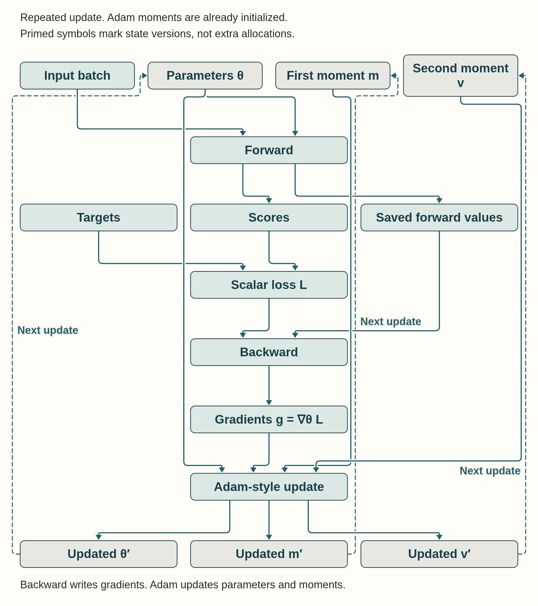
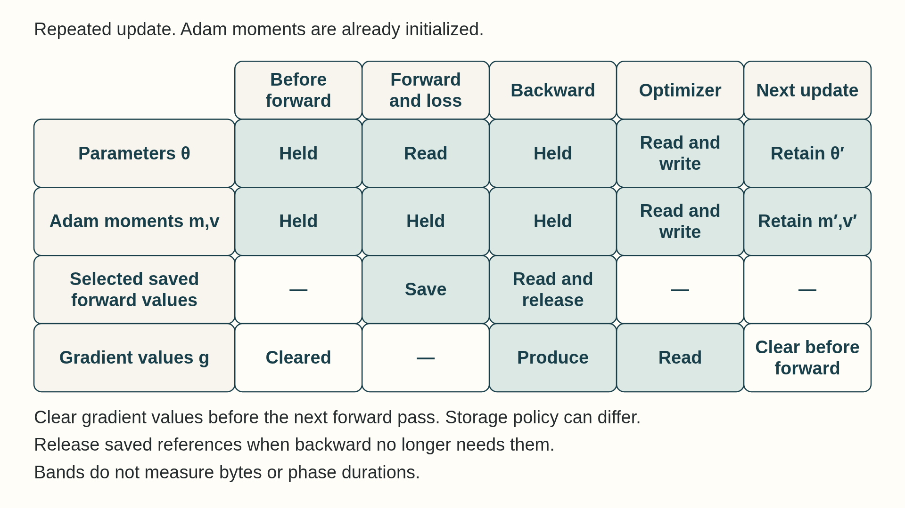

9 Training state and precision
The earlier chapters established how one GPU receives work, moves tensor data, and exposes compute, memory, and launch limits. Training applies those mechanisms to a repeated parameter-update step whose live state includes activations, gradients, optimizer buffers, and the parameters being changed.
Training precision controls the number formats of forward, backward, accumulation, and optimizer updates while the model is learning. It is a different decision from deployment quantization, which changes how an already trained model stores and executes tensors during inference. Chapter 11 treats deployment quantization after the inference workload has been introduced.
Step time gives the total duration of one comparable update, but it does not locate the delay. A CPU/GPU profile or timeline shows whether the critical path contains input preparation, transfer, forward work, backward work, optimizer work, communication, or an uncovered gap. The tensors live during those phases set the memory limit, and the numeric formats used for forward, backward, accumulation, and the optimizer affect both traffic and numerical stability.
A training step reads parameters and input data, saves selected activations for backward propagation, produces gradients, and updates parameters with optimizer state.

Mixed precision can reduce traffic or use faster hardware paths, but some values may require wider accumulation or master state. The result must preserve stable learning and acceptable model quality, not only reduce step time.
9.1 Training step time and throughput
Training performance is the cost of repeating one parameter-update step. A batch is prepared and transferred, the model runs forward, backward propagation produces gradients, and the optimizer updates parameters. The slowest region or the uncovered gap between regions limits how many tokens can be trained per second.
Example: One complete synthetic update
This small classifier first shows the update itself. It uses 64 feature rows with 128 values each and one integer class label from 0 to 15 per row. Linear(128,16) returns 16 raw class scores per row; CrossEntropyLoss compares them with the labels and returns one scalar. The selected device is a CUDA GPU when available, otherwise the CPU. The CPU run teaches the sequence but does not measure GPU speed.
Code example: Complete synthetic classifier update
import torch
torch.manual_seed(0)
device = torch.device("cuda" if torch.cuda.is_available() else "cpu")
features = torch.randn(64, 128, device=device)
labels = torch.randint(0, 16, (64,), device=device)
model = torch.nn.Linear(128, 16).to(device).train()
loss_fn = torch.nn.CrossEntropyLoss()
optimizer = torch.optim.AdamW(model.parameters(), lr=1e-3)
before = [p.detach().clone() for p in model.parameters()]
def train_step():
optimizer.zero_grad(set_to_none=True)
scores = model(features)
loss = loss_fn(scores, labels)
loss.backward()
if not torch.isfinite(loss).item() or not all(
p.grad is not None and torch.isfinite(p.grad).all().item()
for p in model.parameters()
):
raise RuntimeError("Non-finite loss or gradient")
optimizer.step()
return loss.detach()
loss = train_step()
changed = any(
not torch.equal(old, new.detach())
for old, new in zip(before, model.parameters())
)
if not changed or not all(torch.isfinite(p).all().item() for p in model.parameters()):
raise RuntimeError("Update did not produce finite changed parameters")
print("complete finite update; parameters changed")zero_grad clears gradients from any earlier update. The forward call makes scores, the loss supplies a scalar for backward, and backward writes parameter gradients. AdamW.step then changes the parameters using those gradients and its persistent optimizer state. The checks show only that this synthetic update had finite loss, gradients and parameters, and changed at least one parameter. Random features and labels do not show learning quality or convergence. The fixture creates its data on the selected device; a real input path can add batch retrieval and transfer after this update is understood.
- Step time: Elapsed time from the start of one training step to the start of the next comparable step after warmup. It includes data delivery, GPU work, optimizer work, and any communication that remains exposed.
- Global batch: All examples consumed before one optimizer update. On one GPU it is the total number of examples accumulated before the update. A Micro-batch contains the examples processed by one forward and backward pass (Section 9.3). With equally sized micro-batches, this equals micro-batch size times accumulation steps. A Replica is a complete copy of the model parameters. In the one-process-per-GPU data-parallel setup here, each rank holds one replica on its GPU. Global batch sums the actual example counts processed before the update across all data-parallel replicas. Multiplication by the replica count is valid when their per-update example counts match.
- Training throughput: Useful training tokens or examples completed per second. It must be reported with global batch, sequence length, precision, and the quality or convergence condition.
- Exposed tail: Work that remains after useful overlapping work has finished. For a single GPU it can be an input, optimizer, or synchronization delay. In distributed training it often includes unfinished communication.
\[ \text{training step time} \approx \text{data pipeline} + \text{input transfer} + \text{forward} + \text{backward} + \text{optimizer} + \text{exposed communication} \tag{9.1}\]
To use this sum when phases overlap, count only each phase’s exposed contribution to the update interval, so no interval is counted twice. Summing the full durations is appropriate only for a serialized step. Input transfer can overlap with prior GPU work, and later distributed sections show how communication can overlap backward propagation. The useful diagnosis is the part that remains on the critical path after available overlap is accounted for.
The table below maps visible step symptoms to the first measurement that separates likely causes. It is a starting diagnosis, not a claim that one symptom has only one explanation.
| Visible step symptom | Likely live object or gap | First measurement |
|---|---|---|
| GPU idle before forward | CPU batch preparation, storage reads, tokenization, or host-to-device transfer | Timeline with data-loader work, copy events, and the first GPU kernel |
| Peak memory rises through forward | Saved activations and temporary attention or workspace tensors | Peak allocated/reserved memory plus activation-lifetime inspection |
| Backward dominates step time | Gradient kernels, activation reads, or unfused reductions | Kernel timeline and arithmetic-intensity or memory-traffic counters |
| Update is unexpectedly expensive | Optimizer moments, parameter writes, or many small update kernels | Optimizer-region timing and memory-traffic profiling |
| Step ends with a long wait | Uncovered input, synchronization, or distributed communication | Timeline showing the final CPU/GPU or rank-to-rank dependency |
Use the complete update above as the first workload for the symptom table. Its forward and loss, backward, and optimizer operations run in that order. This fixture creates features and labels on the selected device, so it has no input-transfer phase; add retrieval and transfer when diagnosing a real input path. The earlier profiler method separates CPU submission from GPU kernels and copies. A Python phase label times the host code inside it; on CUDA, that duration alone does not measure completion of the submitted GPU work.
Measure complete update time in a separate run without profiler instrumentation. Warm the same update path, synchronize the selected CUDA device before and after a monotonic wall-clock interval, and divide by the number of completed updates. Include batch retrieval and transfer when they are part of the step being compared. Use the same interval, input policy, and output checks for baseline and candidate, as taught in the measurement workflow. On CPU, device synchronization is unnecessary.
A stream is an ordered queue of GPU work (Section 4.4). Work in different streams may overlap when dependencies and hardware permit it. GEMM means General Matrix-Matrix Multiplication, the operation used for large projections (Section 4.7). Fusion combines operations into one kernel, which can remove intermediate memory traffic and launches (Section 8.7). Distributed training may communicate gradient buckets, groups of gradients sent together, while backward computation continues.
The symptom table identifies where to measure first, but the limiting term is the work or gap that remains on the critical path after overlap. The next question is which parameters, activations, gradients, and optimizer buffers are live together and set the memory ceiling.
9.2 Training state and memory
Training usually keeps more live state than a weight-only inference baseline because a step holds gradients, optimizer buffers, and saved activations alongside parameters. A serving process can still exceed that baseline when long-lived KV cache, request state, and workspaces consume substantial memory.
State held during training
- Parameters: Learned values read during forward and updated by the optimizer. They persist across steps.
- Gradients: Derivatives produced during backward and consumed by the optimizer. Their values are step-specific. Their storage may be retained and zeroed, or released and recreated when gradients are set to
None, such as withzero_grad(set_to_none=True). Their footprint is often parameter-sized before sharding, accumulation strategy or reduced-precision storage changes it. - Optimizer state: Persistent update buffers such as Adam’s first and second moments.
- Saved activations: Forward intermediates kept only until backward has used them. Their size grows with micro-batch and sequence length.
During the optimizer step, Adam-style updates read parameters, gradients, first moments, and second moments, then write updated state. That traffic can limit the step even when the forward pass is limited by matrix arithmetic.

Techniques that reduce different parts of that state
- Activation checkpointing: Saves fewer activations and recomputes selected forward regions during backward.
- Low-Rank Adaptation (LoRA): Freezes the base parameters and trains small adapter matrices, reducing trainable parameters, gradients, and optimizer state but not the required activations1.
- Quantized Low-Rank Adaptation (QLoRA): Also stores the frozen base model in a quantized form. Dequantization converts the stored low-bit values back to 16-bit for computation (Section 11.1); QLoRA requires compatible kernels for this conversion.
LoRA and QLoRA change which parameter tensors receive gradients. Activation checkpointing changes which forward tensors remain live. They solve different parts of the memory budget and can be combined when both trainable state and saved activations are limiting the step.
The first-order activation estimate separates linear saved tensors from a quadratic attention term. Let n_hidden count the retained hidden-sized tensors and n_score count the retained attention-score-like tensors in one layer. Those counts depend on the layer implementation, backward algorithm, and recomputation policy:
\[ \text{activation elements per layer} \approx n_{\text{hidden}} B T d + n_{\text{score}} B H T^2 \tag{9.2}\]
\[ \text{activation bytes} \approx b L (n_{\text{hidden}} B T d + n_{\text{score}} B H T^2) \tag{9.3}\]
Here B is the micro-batch size, T the sequence length, d the hidden dimension, H the attention-head count, b the bytes stored per element, L the layer count, n_hidden the retained hidden-sized tensor count, and n_score the retained attention-score-like tensor count. The formula exposes scaling. Measure the actual retained tensors to determine the runtime’s peak memory.
For a GPT-2 Large-style coarse estimate, set n_hidden = 16, n_score = 1, and use 36 layers, hidden dimension 1,280, 20 heads, sequence length 1,024, batch one, and two-byte activation storage. The linear and quadratic terms are then each about 21 million elements. Together they require about 84 MB decimal per layer and about 3.0 GB decimal across 36 layers in this first-order model. Increasing the batch to 32 raises the same estimate to about 97 GB decimal before optimizer state, workspaces, and allocator headroom.
The following choices reduce different live objects. They should be selected from the memory account, not treated as interchangeable capacity fixes.
| Memory lever | Object reduced | Main cost or condition |
|---|---|---|
| Activation checkpointing | Saved activations | Recomputes selected forward regions during backward and increases step compute |
| Smaller micro-batch with accumulation | Saved activations live for one micro-batch at a time | More, smaller passes may lower GPU efficiency; weight losses as in Section 9.3 and take one optimizer step per global batch; keep any rule that changes the learning rate (the optimizer’s step size) after the same update counts, passes through the data, or metric checks in both runs; batch-dependent operations or randomness may still differ |
| BF16/FP16 or supported FP8 path | Saved activations actually stored in the lower-precision format (Section 9.4); gradients or state only if their storage format also changes | Requires compatible kernels and stable numerics; FP32 master parameters and optimizer buffers can offset storage savings |
| FlashAttention-style attention | Materialized attention-score-like tensors | Applies only when the selected attention kernel and dimensions are supported |
| State sharding | Per-rank parameters, gradients, or optimizer state | Introduces collectives and is developed after the communication foundations in Chapter 16 and Chapter 17 |
Activation memory and model-state memory are separate constraints. A sharding strategy can make a model fit while activations still exceed capacity. Checkpointing can lower activations while optimizer buffers remain the limiting state. A useful memory report names the largest live object at peak, not only total allocated bytes.
For a training-method comparison, start baseline and candidate from matching parameters, optimizer state, batches, shapes, and random state. For a change intended to preserve the update, such as activation checkpointing, compare loss, gradients, and resulting parameters under equivalent forward behavior, with tolerances chosen before timing. For a precision change, declare the permitted loss or quality difference and check finite gradients using the unscaling and update rules in Section 9.4. A short loss comparison detects early problems; longer training needs a held-out quality or convergence check. A fixed seed alone does not guarantee identical GPU execution.
9.3 Feeding data and applying updates
Training-step speed depends on the complete path: the host prepares the next batch, copies move it to the GPU, forward and backward kernels execute, and the optimizer reads gradients and persistent state before the next step begins.
- Data pipeline: The CPU-side and storage-side path that reads examples, tokenizes or transforms them, assembles batches, and makes them available for GPU transfer.
- Micro-batch: The examples processed by one forward/backward pass before optional gradient accumulation. Its tensor dimensions determine activation memory and kernel shape.
- Gradient accumulation: Runs several micro-batches, adds their gradients, and performs one optimizer update afterward. It raises the effective global batch while keeping per-micro-batch activation memory lower.
- Fused optimizer: An optimizer implementation that combines update operations, such as reading gradients and updating parameters and moment buffers, with fewer launches or less intermediate traffic.
The first fixture created features on the selected device. A training job usually receives batches from a loader and may copy them to a GPU. The abbreviated loop below adds that input path; it is a phase trace, not a second complete program.
Example: Abbreviated input-to-update loop
For sequence classification, input_ids is a torch.long tensor of shape [B,T], with batch size B and fixed sequence length T; no padding is used here. The supplied classifier returns floating-point logits [B,C], one row of C class scores per sequence, rather than [B,T,C] token scores. labels has shape [B], contains integer IDs from 0 to C-1, and loader supplies compatible batches. The model is already in training mode on cuda:0, and the optimizer already owns its parameters. This listing omits those constructors, so it is not runnable alone.
nn.CrossEntropyLoss() takes those raw scores and labels and returns one scalar mean loss. For B=2, C=2, scores [[0,0],[0,0]], and labels [0,1], each target has probability 1/2. Each loss is -log(1/2), about 0.6931, and the mean is also 0.6931; loss.backward() starts from that scalar. The class axis and target type follow the PyTorch 2.4 loss contract.2 A causal language model needs a different token-target alignment and loss layout.
Code example: Abbreviated input-to-update loop
import torch
import torch.nn as nn
device = torch.device("cuda", 0)
# model is already on this device; optimizer owns its parameters.
loss_fn = nn.CrossEntropyLoss()
for batch in loader:
# Pinned source buffers plus non_blocking copies can overlap input transfer with GPU work.
input_ids = batch["input_ids"].to(device, non_blocking=True)
labels = batch["labels"].to(device, non_blocking=True)
# Releasing old gradient storage avoids writing a full tensor of zeros each step.
optimizer.zero_grad(set_to_none=True)
# Forward execution reads parameters, creates activations, and may retain them for backward.
logits = model(input_ids) # tensor [B, C], one row per sequence
# Integer labels [B]; default mean reduction returns a scalar.
loss = loss_fn(logits, labels)
# Backward reads saved activations, writes gradients, and may trigger distributed collectives.
loss.backward()
# The optimizer reads parameters, gradients, and optimizer-state buffers, then writes updated parameters and state.
optimizer.step()The loop makes four measurement questions concrete:
- Input transfer: The
.to(device, non_blocking=True)calls overlap other work only when the source buffers and stream dependencies permit it. Pinned host memory is commonly needed for useful overlap.3 - Forward execution:
PyTorchdispatches tensor operations. Large projections may call vendor GEMM kernels, while small elementwise regions may launch separately unless compilation or fusion changes that path. - Activation retention: Autograd records operations and saves values needed for backward. Parameters, saved activations, gradients, and workspaces can overlap in time and set peak memory.
- Optimizer traffic: Adam-style updates read parameters, gradients, and persistent moment buffers, then write updated parameters and moments. Measure this work separately when it may limit the step.
Accumulation preserves a chosen mean loss only when each backward pass contributes the correct fraction of that mean. For two equal-sized micro-batches with mean losses \(L_1\) and \(L_2\), the combined objective is \((L_1+L_2)/2\). Backward therefore uses \(L_1/2\) and \(L_2/2\), with parameters held fixed until both contributions have accumulated. Gradients are cleared before this cycle and after its single optimizer update, never between its backward passes4.
For an additive mean over two equal examples, scale each micro-batch loss by one half, accumulate both gradients at unchanged parameters, then update once. In the toy calculation the combined gradient is 5 and the parameter moves from 1 to 0.5. Batch-dependent behavior and unequal valid-token counts need separate handling.
Example: Two micro-batches, one update
Inputs and objective: Consider training a scalar model \(\hat y=\theta x\) with \(\theta=1\), inputs \(x_1=1\) and \(x_2=3\), and targets \(y_1=y_2=0\). Each one-example micro-batch has loss \(L_j=(\theta x_j-y_j)^2/2\). The intended objective is the mean over both examples. This illustrative calculation uses ordinary gradient descent with learning rate \(0.1\) and no momentum.
- Clear old gradients. At the unchanged parameter \(\theta=1\), the losses are \(L_1=0.5\) and \(L_2=4.5\). Their derivatives are \((\theta x_j-y_j)x_j\), giving \(1\) and \(9\).
- Backward on \(L_1/2\) leaves accumulated gradient \(0.5\). Backward on \(L_2/2\) adds \(4.5\), leaving \(5\). No optimizer update or gradient clearing occurs between them.
- One combined batch also gives loss \((0.5+4.5)/2=2.5\) and gradient \((1+9)/2=5\). The optimizer applies \(\theta\leftarrow1-0.1(5)=0.5\) once, then clears the gradients for the next cycle.
Conclusion: Summing the two unnormalized gradients would give \(10\) and double this update. Matching the combined gradient assumes an additive objective and the same per-example forward behavior. Batch-dependent operations, random draws, and floating-point summation order can prevent exact agreement in a real model.
For an unweighted mean over valid training tokens, equal example counts need not mean equal loss weight. Let \(n_j\) count the non-ignored target positions in micro-batch \(j\), and let \(N=\sum_j n_j>0\) cover the whole accumulation cycle. If \(L_j\) is that micro-batch’s mean over its valid targets, its contribution is \((n_j/N)L_j\). Equivalently, each micro-batch’s summed valid-token loss is divided by the same \(N\). A micro-batch with no valid targets contributes zero without taking an empty mean. A shorter final accumulation cycle uses its actual count. A class-weighted or per-sequence objective requires its own reduction denominator. These counts and the following trace describe one worker. Distributed averaging must preserve the intended global objective as well.
Padding also affects throughput accounting. A valid training token here is a target position that contributes to the chosen token loss, after any target shift or mask. Padding and ignored targets do not count. For \(B_{\mathrm{global}}\) examples in a complete update, let \(n_i\) be example \(i\)’s valid-token count and \(t_{\mathrm{update}}\) the update duration in seconds, including all accumulated micro-batches:
\[ \text{useful training tokens/s} = \frac{\sum_{i=1}^{B_{\mathrm{global}}} n_i}{t_{\mathrm{update}}} \tag{9.4}\]
By contrast, \(B_{\mathrm{global}}T_{\mathrm{padded}}/t_{\mathrm{update}}\) counts processed tensor positions per second when all sequences are padded to length \(T_{\mathrm{padded}}\). It equals useful tokens/s only if every position contributes a valid target. Both rates use the same complete update boundary after warmup, with global batch, precision, and loss convention reported.
Example: Padding and useful throughput
Suppose two training sequences contribute 3 and 5 valid targets and are padded to a common length of 5. The complete update takes an illustrative 0.1 seconds. The loss mask excludes the two padded positions, so useful throughput is \((3+5)/0.1=80\) tokens/s. The tensor contains \(2(5)=10\) positions, giving \(10/0.1=100\) processed positions/s. Extra padding can raise the position count without adding training targets. The useful-token rate therefore answers how much loss-bearing data the update processed.
A change that also changes optimizer update frequency, the loss curve, or model quality creates a different training setup and must be evaluated separately.
Follow the training step in execution order and check each stage before tuning the next one:
- Batch preparation: CPU workers, storage reads, tokenization, and collation make the next batch ready before the current GPU step finishes.
- GPU transfer: Pinned host buffers, copy streams, and dependencies permit overlap without serializing the step.
- Forward and backward evidence: Profiler evidence separates compute throughput, HBM traffic, launch overhead, activation memory, and gradient work.
- Parameter-update evidence: Parameter, gradient, and optimizer-moment traffic are measured separately from backward. Supported runtimes can use fused update kernels.
- Gradient accumulation: Preserves the intended effective batch while tracking gradient lifetime, memory use, update frequency, and synchronization.
These are single-worker training controls. Once the full step is understood locally, the distributed chapters add the communication and state-placement costs of scaling the same step across GPUs and nodes.
Example: Counting parameter and gradient bytes
This abbreviated calculation assumes that model already exists and its parameters and gradients use dense layouts. Parameter bytes can be counted immediately. Gradient bytes appear only after backward propagation has populated p.grad. The helper counts logical tensor payloads, not unique storage when tensors share memory. Sparse gradients need a layout-specific count of stored values and index arrays, so this helper is not their storage estimate. It also excludes allocator reservation, fragmentation (free memory split into pieces too small to use), metadata, workspaces, or distributed buffers.
Code example: Counting parameter and gradient bytes
import torch
param_bytes = sum(
p.numel() * p.element_size()
for p in model.parameters()
)
grad_bytes = sum(
p.grad.numel() * p.grad.element_size()
for p in model.parameters()
if p.grad is not None
)
print(f"parameters: {param_bytes / 2**20:.1f} MiB")
print(f"gradients: {grad_bytes / 2**20:.1f} MiB")Conclusion: Parameter payload exists before backward, while gradient payload begins when autograd materializes p.grad. A memory report therefore needs the active phase as well as allocator and workspace overhead.
9.4 Precision formats and PyTorch backend controls
A numeric format determines how values use their available bits. In training, the format must preserve a stable update while reducing memory traffic and using efficient matrix hardware. In deployment, the same format choice can instead target model footprint or inference bandwidth.
torch.backends and precision APIs permit framework-owned implementation choices for matrix multiplication, cuDNN (NVIDIA’s neural-network kernel library) operations, and attention. The relevant setting must be recorded with the training precision and measured execution path.
A finite, nonzero normalized binary floating-point value has the form \((-1)^b(1.f)_2 2^e\). The sign bit \(b\) selects positive or negative. The exponent \(e\) sets the power-of-two scale. The significand \((1.f)_2\) holds the significant binary digits, with fractional bits \(f\) determining the spacing at a given exponent. Format descriptions often call these stored fractional bits the mantissa. The encoded exponent uses a bias to represent negative and positive exponents5.
In a toy binary format with two fractional bits and exponents from -2 to 2, the spacing near 3 is 0.5, while 8 exceeds the range. More exponent range admits larger magnitudes. More fractional bits refine nearby values. The toy format omits zero, subnormals, infinities, and NaNs.
Example: Range versus spacing
Assume a toy format with two fractional bits and allowed exponents from \(-2\) to \(2\). It describes normalized nonzero numbers only, omitting zero, subnormal numbers, infinities, and NaNs. The value \(+(1.10)_2 2^1=(1+1/2)2=3\) has positive sign, significand \(1.5\), and exponent \(1\).
At that exponent, adjacent values are \(2\), \(2.5\), \(3\), and \(3.5\): their spacing is \(2^1/2^2=0.5\). Rounding to the nearest value maps \(3.1\) back to \(3\), so adding \(0.1\) to a value stored as \(3\) can leave it unchanged. The largest positive value is \((1.11)_2 2^2=7\). A value of \(8\) lies outside this format’s range. Allowing a larger exponent would admit \(8\) but would not make the spacing near \(3\) finer. Adding a fractional bit would refine that spacing without adding another exponent.
Conclusion: Exponent range governs which magnitudes fit. Significand precision governs how closely nearby values can be distinguished.
This distinction explains the FP16/BF16 choice: BF16 covers a wider range but has fewer fractional bits than FP16. Loss scaling (multiplying the loss to reduce small-gradient underflow) can move small gradients into a representable range during backward, but cannot restore precision already lost to rounding or make a tiny update survive addition to a much larger low-precision weight. Wider optimizer state addresses that separate problem.
- FP32: 32-bit floating point. It is broadly supported and useful for numerically sensitive accumulation or reference results. The same tensor uses twice the storage of FP16/BF16. Operation speed depends on the GPU, TensorFloat-32 policy, dimensions, and selected library kernel.
- TF32: TensorFloat-32, an NVIDIA tensor-core mode for many FP32 matrix operations. It keeps FP32-like exponent range but uses a reduced mantissa, so it can be much faster than strict FP32 while being less precise.
- FP16: 16-bit floating point with smaller range than FP32. It is common for training and inference on tensor cores, but training may require loss scaling or mixed-precision practices to avoid overflow/underflow problems.
- BF16: 16-bit Brain Floating Point. It has FP32-like exponent range with fewer mantissa bits, which often makes training more stable than FP16 while still reducing memory traffic relative to FP32.
![Three byte groups show four unit cells for FP32 and two each for FP16 and BF16. Three aligned toy number lines show positive normalized values near 3. The original toy has two fraction bits and exponents minus 2 to 2. Its nearby values are 2, 2.5, 3 and 3.5. Rounding maps 3.1 to 3, and 8 exceeds its maximum of 7. Allowing exponent 3 makes 8 representable without changing spacing near 3. A third fraction bit with the original exponent limits adds quarter-step values, including 3.25, while 8 remains outside. These toy rows do not depict real-format bit encodings.](../assets/fig-m4-c07-formats.png)
- FP8: 8-bit floating-point families used on newer accelerators with scaling metadata and compatible kernels6. Runtime support must handle scaling, accumulation, and selected operations.
- FP4 and block-scaled FP4: 4-bit floating formats often paired with one scale for a small block of values7. Block scaling can preserve local dynamic range, but it adds scale loads, packing constraints, and hardware-specific kernel requirements.
- INT8: 8-bit integer representation commonly used for quantized inference weights and sometimes activations (Section 11.1). It requires a mapping between integer codes and approximate real values, plus kernels that efficiently consume the representation.
- INT4: 4-bit integer representation often used for weight-only inference compression. Quality and speed depend strongly on grouping, scales, dequantization cost, and kernel support.
- Ternary weights: A specialized low-bit design whose weights take three values, such as negative, zero, and positive. It requires a model representation and kernel path designed for ternary values. An ordinary FP16 checkpoint needs conversion plus compatible kernels.
Precision settings let PyTorch choose lower-precision internal arithmetic or a different library kernel for supported operations. The selected path still depends on the PyTorch version, GPU, dimensions, dtype, and operation-specific eligibility. PyTorch 2.14 documents the newer precision controls and warns against mixing them with the older allow_tf32 flags in one configuration8.
| PyTorch control | Owner and scope | Performance meaning | Condition to verify |
|---|---|---|---|
torch.backends.cuda.matmul.fp32_precision |
PyTorch CUDA matrix policy in newer releases | Can permit reduced internal precision for supported FP32 matrix multiplication | Version, GPU support, output accuracy, and actual dispatched kernel |
torch.backends.cudnn.fp32_precision |
PyTorch cuDNN policy in newer releases | Can permit reduced internal precision for supported cuDNN operations | The operation is covered by cuDNN and the setting exists in the installed version |
torch.backends.cuda.matmul.allow_tf32 |
Older PyTorch CUDA matrix flag | Allows TensorFloat-32 for supported matrix multiplication | Version-specific guidance and whether a newer control supersedes it |
torch.set_float32_matmul_precision(...) |
PyTorch matrix-multiplication API | Selects internal precision policy for float32 matrix multiplication | It does not control convolution precision or model-quality requirements |
| Scaled-dot-product attention backend policy | PyTorch attention dispatch | Permits flash, memory-efficient, or math attention paths | Device, dtype, mask, head dimension, sequence dimensions, and backend availability |
The formats above describe available representations. The following update mechanisms keep reduced-precision compute paths numerically stable during training.
- Mixed-precision training: Runs selected tensor operations and storage in reduced precision while retaining higher-precision accumulation or selected state where numerical range matters9. The objective is lower traffic and faster matrix paths without destabilizing parameter updates.
- FP32 master weights: One common FP16 mixed-precision design keeps persistent FP32 parameters for optimizer updates and casts a reduced-precision compute copy for forward and backward kernels10. BF16, fused optimizers, sharded state, and newer low-precision recipes can use different layouts.
- Gradient underflow: A gradient becomes too small for the selected format and rounds to zero. FP16 is especially susceptible because its representable range is narrower than FP32 or BF16.
- Loss scaling: Multiplies the loss before backward propagation so small FP16 gradients are less likely to underflow, then divides the gradients by the same scale before the optimizer update11. Dynamic loss scaling lowers the scale after overflow is detected.
- Higher-precision accumulation: Accumulates reductions, dot products, or optimizer updates in a wider format than the input operands when the hardware and kernel path support it. This preserves numerical headroom while retaining much of the throughput benefit of reduced-precision inputs.
The mixed-precision state path separates the representation used by fast matrix kernels from the representation that receives the parameter update. A common FP16 path keeps FP32 master weights, uses loss scaling, then unscales and checks gradients before the FP32 update. BF16 has a wider exponent range and often does not need loss scaling, although the optimizer and accumulation layout still depend on the selected training stack.
\[ \text{scaled loss} = S \times \text{loss}; \quad \text{unscaled gradient} = \frac{\text{scaled gradient}}{S} \tag{9.5}\]
Here S is a positive loss scale. Scaling can keep small FP16 gradients representable during backward propagation, but one scale may still leave some gradients too small or make others overflow. Unscaling restores their intended magnitude before the optimizer updates the FP32 master weights. A finite-value check detects overflow before an invalid update is applied.
With gradient accumulation, the loss scale stays fixed through the whole cycle in Section 9.3. For an FP16 CUDA loop with one optimizer, create scaler = torch.amp.GradScaler() once before training. This object holds the loss scale \(S\) and adjusts it between accumulation cycles. Compute the forward pass and loss inside torch.autocast(device_type="cuda", dtype=torch.float16). This context chooses FP16 for eligible operations and keeps selected operations in FP32 where more precision is needed. Normalize the loss as in Section 9.3. Outside that context, call scaler.scale(normalized_loss).backward() for each micro-batch to accumulate scaled gradients.
If clipping is needed, call scaler.unscale_(optimizer) once after the last backward pass, then clip the unscaled gradients before calling scaler.step(optimizer). That step unscales if needed, checks for nonfinite gradients, and applies or skips the optimizer update. Finish the cycle with scaler.update() to adjust the scale, then optimizer.zero_grad() to clear gradients for the next cycle12.
![FP32 master weights supply an FP16 working copy for eligible forward operations. The forward and loss region contains selected FP32 accumulation. The scalar loss is not assigned one universal format. A positive scale S multiplies the loss before backward. Unscaling divides gradients by S. A finite-gradient check leads to an FP32 update or skips it. The update reads and writes master weights and FP32 moments. A skipped update preserves both. The scale is adjusted for later cycles. This common recipe does not describe every training stack.](../assets/fig-m4-c07-fp16-state.png)
Example: Scaling an accumulated gradient
Using the two-micro-batch example from Section 9.3 with an illustrative fixed loss scale \(S=8\), the backward contributions are \(8(0.5)=4\) and \(8(4.5)=36\). Their sum is \(40\), and unscaling once gives \(40/8=5\), the intended combined gradient. Unscaling after the first contribution would instead mix \(0.5\) with the still-scaled \(36\). A single division could no longer recover the intended result. If the final accumulated gradients contain an infinity or NaN, the optimizer update is skipped and the scale is adjusted before the next cycle.
FP8 is a family, not one format. The two common FP8 encodings trade exponent range against mantissa precision, and practical systems add scaling metadata so tensors with wider dynamic range can still be represented13.
The amax of a tensor is its maximum absolute element value, \(\max_i |x_i|\). An FP8 scaling recipe uses this magnitude, or, in delayed scaling, a history of earlier magnitudes, to choose a scale that fits the tensor into the selected format. A large outlier can force coarser spacing for smaller values. Delayed scaling also depends on how well previous amax values predict the current tensor14.
| Format or scaling choice | What it changes | Performance effect |
|---|---|---|
| E4M3 | Four exponent bits and three mantissa bits | More precision within a narrower range; often useful for values whose range can be controlled by scaling |
| E5M2 | Five exponent bits and two mantissa bits | Wider dynamic range with less mantissa precision; useful when overflow risk is more important than small relative error |
| Per-tensor scale | One scale for a whole tensor | Low metadata overhead but poor fit when channels or blocks have different ranges |
| Per-channel or per-block scale | Separate scales for smaller groups | Better local fit and fewer saturated values, but extra metadata and more complex kernels |
The same block-scaling idea appears in emerging FP4 paths. Transformer Engine 2.19 documents NVFP4, whose four-bit values use one sign bit, two exponent bits, and one mantissa bit (E2M1). Its one-dimensional format uses an E4M3 scale per 16-element block and an additional per-tensor FP32 scale. For comparison, MXFP8 stores eight-bit values, not four-bit values, and uses one E8M0 power-of-two scale per 32 values15. The local trade-off is scale precision against scale storage and conversion cost. These formats require compatible hardware and kernels. A reported FP4 throughput gain describes a particular model, accelerator, and runtime path, not a universal property of four-bit storage.
Performance condition
A smaller representation can improve performance by reducing limiting traffic, enabling useful work that previously did not fit, or using faster supported arithmetic. Conversion, wider temporary tensors, and unsupported kernels can offset those gains, so the complete workload must be measured.
Bit width alone does not predict speed. For a precision or optimizer change, start baseline and candidate from matching model and optimizer states, use the same batches and random-state policy, and declare acceptable numerical differences before timing. Check finite loss, gradients, and resulting parameters. If the change is intended to preserve the update, compare those values within the chosen tolerances. A short finite update catches failures but does not show that the altered method preserves learning; check intended quality or convergence over a longer training run. Then measure complete warmed steps with the same measurement interval. Deployment formats that store weights or the KV cache in fewer bits, and their quality checks, belong in model compression for inference.
Example: Training memory per parameter
Inputs: Consider the mixed-precision training arrangement (computing mostly in 16-bit formats while keeping some values in 32-bit) used for the ZeRO paper’s Adam memory estimate. It keeps five values for every parameter. The working weights and gradients in the cited example use FP16, at 2 bytes each. Using BF16 for these two arrays gives the same byte count. The optimizer holds an FP32 master copy of the weights plus Adam’s two running averages, at 4 bytes each. Section 9.4 explains why the master copy exists. Other implementations can store gradients or optimizer state differently, so this 16-byte budget applies to the arrangement specified here.
Calculation: \(2+2+4+4+4=16\) bytes per parameter. This is the standard accounting in the ZeRO paper, which writes the optimizer’s share as \(K=12\) bytes.16 For a 7-billion-parameter model, \(7\times10^9\times16=112\times10^9\) bytes, or 112 GB, compared with 14 GB for the BF16 weights that inference needs.
Conclusion: Before a single activation is stored, the training state of a 7B model exceeds one 80 GB GPU. Activation checkpointing (discarding some forward results and recomputing them during backward, Section 9.2) does not help with these 112 GB, because it reduces activations only. Sharding the 16 bytes across ranks (Section 18.4) does.
Training changes parameters and therefore keeps gradients, saved activations, and optimizer state live. Inference fixes the parameters but introduces request state, prompt prefill, repeated token decode, and a growing KV cache. Chapter 10 builds that different workload and its user-visible metrics from the request path onward.
References
Hu, E. J., et al. (2021). LoRA: Low-Rank Adaptation of Large Language Models. arXiv:2106.09685. LoRA paper. Supports freezing base weights and training injected low rank matrices to cut trainable parameters and memory, with no added inference latency after merging. Limit: reported parameter and memory reductions are for the paper GPT-3 style setup; activation memory still depends on micro-batch and sequence length.↩︎
PyTorch. (2024). CrossEntropyLoss (PyTorch 2.4 documentation). Input and target shapes. Supports raw logits
[B,C], integer class targets[B], and scalar output under mean reduction. The two-example calculation illustrates that contract, not a measured training result.↩︎NVIDIA. (2024). CUDA C++ Programming Guide 12.4. CUDA 12.4 programming guide (release 2024-03-05). Support: page-locked host memory and overlap of data transfer with kernel execution, including stream and event ordering conditions. Limit: PyTorch DataLoader pinning and nonblocking flags are framework wrappers around this CUDA behavior.↩︎
PyTorch. (2.14 documentation). Automatic Mixed Precision examples, Gradient accumulation. PyTorch gradient accumulation example. Supports fixed scaling during accumulation and unscale/check/step/scale-update at the effective-batch boundary. Limit: its equal-size example divides by the number of micro-batches; unequal valid-token counts require the objective-specific weighting derived here.↩︎
NVIDIA. (CUDA 13.4 documentation). Floating Point and IEEE 754, Sections 2.1-2.2. CUDA floating-point guide. Supports sign, biased exponent, fraction, finite precision, and rounding. Limit: the two-fractional-bit format is an illustrative calculation, not an IEEE format or hardware measurement.↩︎
NVIDIA. (Transformer Engine 2.19.0 documentation). Using FP8 and FP4 with Transformer Engine. Transformer Engine FP8 and FP4 primer. Supports E4M3 as 1 sign bit, 4 exponent bits, 3 mantissa bits up to about plus or minus 448, and E5M2 as 1 sign bit, 5 exponent bits, 2 mantissa bits up to about plus or minus 57344; the usual hybrid use is E4M3 for forward weights and activations and E5M2 for backward gradients, with one FP32 scale per tensor in current scaling. Limit: H100 and Blackwell Tensor Core support and recipe availability vary by GPU and Transformer Engine release; the chapter table keeps the choice as a measurement decision.↩︎
NVIDIA. (Transformer Engine 2.19.0 documentation). Using FP8 and FP4 with Transformer Engine. Transformer Engine FP4 block-scaling primer. Describes four-bit NVFP4 values of magnitude up to 6, a scale per 16 values, and an additional FP32 tensor scale. Its training recipe uses 16 by 16 scaling for weights. The eight-bit MXFP8 comparison uses a power-of-two scale per 32 values. These are Blackwell-specific recipes, not evidence of a universal speedup.↩︎
PyTorch. (2.14 documentation). CUDA semantics, TensorFloat-32 on Ampere and later devices. CUDA semantics. Describes backend and operator precision controls and the unsupported mixing of old and new settings. Eligibility and accuracy still depend on the operation and hardware.↩︎
Micikevicius, P., et al. (2018). Mixed Precision Training. arXiv:1710.03740. Mixed Precision Training paper. Supports storing weights, activations and gradients in FP16 with an FP32 master copy, scaling loss before backward and unscaling before update, and accumulating FP16 products in FP32. Limit: the method targets FP16 range limits; BF16 and FP8 paths in the chapter have different stability and kernel conditions.↩︎
Micikevicius, P., et al. (2018). Mixed Precision Training. arXiv:1710.03740. Mixed Precision Training paper. Supports storing weights, activations and gradients in FP16 with an FP32 master copy, scaling loss before backward and unscaling before update, and accumulating FP16 products in FP32. Limit: the method targets FP16 range limits; BF16 and FP8 paths in the chapter have different stability and kernel conditions.↩︎
Micikevicius, P., et al. (2018). Mixed Precision Training. arXiv:1710.03740. Mixed Precision Training paper. Supports storing weights, activations and gradients in FP16 with an FP32 master copy, scaling loss before backward and unscaling before update, and accumulating FP16 products in FP32. Limit: the method targets FP16 range limits; BF16 and FP8 paths in the chapter have different stability and kernel conditions.↩︎
PyTorch. (2.14 documentation). Automatic Mixed Precision examples, Gradient accumulation. PyTorch gradient accumulation example. Supports fixed scaling during accumulation and unscale/check/step/scale-update at the effective-batch boundary. Limit: its equal-size example divides by the number of micro-batches; unequal valid-token counts require the objective-specific weighting derived here.↩︎
NVIDIA. (Transformer Engine 2.19.0 documentation). Using FP8 and FP4 with Transformer Engine. Transformer Engine FP8 and FP4 primer. Supports E4M3 as 1 sign bit, 4 exponent bits, 3 mantissa bits up to about plus or minus 448, and E5M2 as 1 sign bit, 5 exponent bits, 2 mantissa bits up to about plus or minus 57344; the usual hybrid use is E4M3 for forward weights and activations and E5M2 for backward gradients, with one FP32 scale per tensor in current scaling. Limit: H100 and Blackwell Tensor Core support and recipe availability vary by GPU and Transformer Engine release; the chapter table keeps the choice as a measurement decision.↩︎
NVIDIA. (Transformer Engine 2.19.0 documentation). Using FP8 and FP4 with Transformer Engine. Transformer Engine FP8 and FP4 primer. Supports E4M3 as 1 sign bit, 4 exponent bits, 3 mantissa bits up to about plus or minus 448, and E5M2 as 1 sign bit, 5 exponent bits, 2 mantissa bits up to about plus or minus 57344; the usual hybrid use is E4M3 for forward weights and activations and E5M2 for backward gradients, with one FP32 scale per tensor in current scaling. Limit: H100 and Blackwell Tensor Core support and recipe availability vary by GPU and Transformer Engine release; the chapter table keeps the choice as a measurement decision.↩︎
NVIDIA. (Transformer Engine 2.19.0 documentation). Using FP8 and FP4 with Transformer Engine. Transformer Engine FP4 block-scaling primer. Describes four-bit NVFP4 values of magnitude up to 6, a scale per 16 values, and an additional FP32 tensor scale. Its training recipe uses 16 by 16 scaling for weights. The eight-bit MXFP8 comparison uses a power-of-two scale per 32 values. These are Blackwell-specific recipes, not evidence of a universal speedup.↩︎
Rajbhandari, S., Rasley, J., Ruwase, O., & He, Y. (2020). ZeRO: Memory Optimizations Toward Training Trillion Parameter Models. ZeRO paper on arXiv (v3 2020-05-13). Support: ZeRO partitions optimizer states (Stage 1), gradients (Stage 2), and parameters (Stage 3) across data-parallel ranks. Section 3.1 counts mixed-precision Adam as 2 bytes of fp16 parameters, 2 bytes of gradients, and K = 12 bytes of fp32 parameter copy, momentum, and variance, 16 bytes per parameter in total. Limit: FSDP details and the guide’s sharding tradeoffs are separate framework behavior covered in later chapters.↩︎